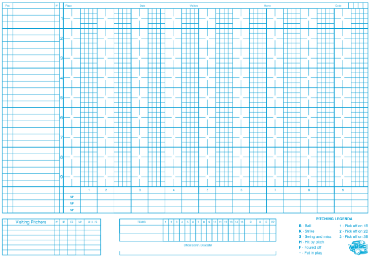
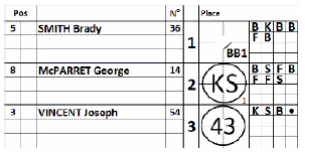
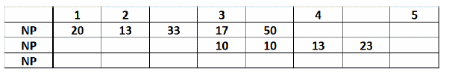
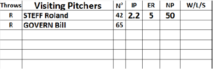

Before the game a second scorer will be assigned to the game. His job will be to record the plays together with the first scorer, but also to keep the pitch count to help the data-entry. This is done on an especially for this purpose developed sheet.
It is a simple embodiment of the score-sheet as there are no columns for defense or offense statistics.
 |
To use the sheet, simply add the line-up with the position and the uniform number. Use the left column as a normal score-sheet to record the plays. In the small squares write the successive pitches by using the pitching legend a. So B for Ball, K for Strike, S for Swing and miss, , H for Hit by pitch F for Fouled off, and a dot when a pitch is put in play. |
In case of a pick-off, use a 1 for a pick-off on first base, a 2 for a pick-off on second base and a 3 for a pick-off on third base.
For the first inning, only the number of pitches for the first inning is given alongside the abbreviation NP in the left-hand column.
For subsequent innings, the left-hand column should contain the number of pitches for each individual inning, and the right-hand column contains the cumulative totals.
Once a new pitcher climbs the mound, start writing the number of pitches on the second line. In case a fourth pitcher joins the game, use the first line again.

|
When the new pitcher climbs the mound during a turn at bat, this has to be clear in the pitch count sheet. Put a line in the remaining boxes and start on a new line. |

Check after each inning if the number of pitches on the sheet equals the number of pitches in the data entry.
Just remember: use the pitch count sheet in the same way as the regular sheet. This means that the pitcher of the team is written under the batting order of his own team.